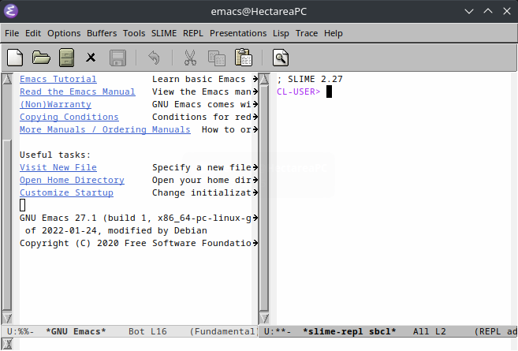

Instalando Common Lisp
Introducción
Quizás la expresión 'instalar Common Lisp' no es la más acertada, pero creo que se entiende bastante bien. El objetivo al final es poder picar código Common Lisp de manera cómoda. Sin embargo, lo mínimo que necesitamos para poder programar es una implementación del lenguaje. Lo demás, editores de texto junto con las extensiones adecuadas, son un extra.
Lo mínimo necesario
Common Lisp es un estándar, como lo es también C++. Es decir, cuando hablamos del lenguaje, hablamos de cómo funciona. Pero si queremos crear un programa, necesitamos además un compilador o intérprete. Éstos se llaman implementaciones del lenguaje. Pues eso es lo único que necesitas para crear programas usando el lenguaje Common Lisp.
Al igual que ocurre con C++, existen varias implementaciones de Common Lisp. Algunas de las más conocidas son:
- Allegro Common Lisp
- Lisp Works
- Clozure CL (CCL)
- Embeddable Common Lisp (ECL)
- Steel Bank Common Lisp (SBCL)
Casi todo el mundo, yo incluido, empieza con SBCL por los buenos mensajes de error que muestra. Y esta implementación es la que vamos a ver cómo se instala.
Todas te sirven. La diferencia está en aquellas partes que no se especifican en el estándar de Common Lisp. Por ejemplo, cómo se deben crear hilos, cómo se crean los ejecutables, cómo ejecutamos código foráneo, cómo se compila el código, etc.
SBCL en Ubuntu
Si estás usando Ubuntu la instalación es muy sencilla, pues SBCL está en los repositorios oficiales. Es decir, sólo tienes que ejecutar en una terminal el siguiente comando:
sudo apt install sbcl
En cualquier OS
Si no estás en Ubuntu, puedes descargar SBCL desde su página web y seguir el proceso de instalación. Verás algo como esto:

Figura 1: Página de descargas de SBCL
Basta con que elijas el sistema operativo y la versión que quieras. Por ejemplo, usando Linux o Windows vale la pena que cojas la última versión situada en la columna AMD64.
Con esto descargarás un archivo comprimido. Su nombre será parecido al de 'sbcl-2.3.1-x86-64-linux-binary.tar.bz2'.
Descomprímelo usando el siguiente comando:
bzip2 -cd sbcl-2.3.1-x86-64-linux-binary.tar.bz2 | tar xvf -
En el interior de la carpeta descomprimida habrá un archivo 'install.sh'. Así que basta con que lo ejecutes:
cd sbcl-2.3.1-x86-64-linux
sh install.sh
Pues ya estaría
¡Ya está! No necesitas nada más para programar en Common Lisp. Para empezar a usar el intérprete basta con ejecutar el comando sbcl.

Figura 2: Ejemplo de uso con SBCL
Un IDE para Common Lisp
Claramente usar la terminal para programar en Common Lisp no es la mejor idea. Es por eso que existen los IDEs, es decir, entornos de desarrollo. El problema es que no existe ningún IDE específico para Common Lisp. Bueno, en realidad LispWorks sí te ofrece uno, pero no es gratuito. Es por eso que la mejor opción es prepararnos algo lo más parecido a un IDE, y para ello necesitamos 3 ingredientes:
- Un editor de texto.
- Una extensión del editor que se pueda comunicar con la implementación de Common Lisp que queramos usar.
- Indicarle a dicha extensión dónde está el ejecutable de la implementación de Common Lisp.
Las tres opciones 'editor+extensión' más conocidas son las siguientes:
- Visual Studio Code + Alive (también existe la extensión Common Lisp)
- Atom + Slima
- Emacs + Slime (lo mejor de lo mejor)
Si has visto otros blogs o videos sobre qué se debe usar para programar en Common Lisp habrás visto que todos recomiendan la última opción: Emacs junto con Slime. Y tienen razón. No hay más. Es que es lo mejor que hay ahora mismo (y muy posiblemente para siempre).
Pero hablemos un poco sobre Emacs. Empezar a usarlo fue una experiencia dura. Si no recuerdo mal lo instalé y desinstalé 4 o 5 veces. Mientras tanto iba probando las otras dos opciones. Con VSCode duré una semana o así porque la extensión Alive era algo incómoda y no me iba del todo bien. La otra extensión llamada Common Lisp no la he probado. En cuanto a Atom lo usé aproximadamente durante un mes. La verdad es que no estaba nada mal, pero a Slima le faltaba algo que hiciese que me gustase del todo. Además, me acabo de enterar de que ya no van a seguir actualizándolo, es decir, Atom a muerto. Pero tú debes hacer lo que quieras, ve probando las diferentes opciones. Aunque lo más seguro es que acabes con Emacs, como hice yo. Y estaré eternamente agradecido con la gente que haya creado Emacs porque ahora lo adoro. Lo uso para casi todo, incluso para escribir lo que estás leyendo ahora mismo.
Como ya puedes imaginar, vamos a explicar cómo instalar Emacs junto con la extensión Slime.
Instalando Emacs
Puedes ver las instrucciones de instalación en su página oficial.
Ubuntu
Basta con que ejecutes el siguiente comando:
sudo apt install emacs
En su página de descargas puedes ver cómo instalar emacs con otros gestores de paquetes.
Otros OS
Casi lo mismo que antes, en su página puedes ver las instrucciones de instalación para cada sistema operativo, no tiene pérdida.
Instalando Slime
Como Slime es una extensión de Emacs, necesitamos abrir primero el editor. La primera vez que ejecutes Emacs verás algo como esto:

Figura 3: Primera sesión de Emacs
Ostras… Es… ¡¡feísimo!! ¡¡Y viejo!! Que no cunda el pánico. Seguramente ya hayas leído que en Emacs todo se puede configurar. Y eso incluye su apariencia. Para que veas un ejemplo de un Emacs configurado te muestro qué veo yo cuando inicio Emacs:

Figura 4: Emacs ya configurado
Mucho mejor, creo yo. Un tema oscuro, minimalista y sin botones feos. Al menos es bonito para mí. Y esa es la gracia, Emacs es para que lo configures a tu gusto. Y no tengas prisa, la configuración se va cociendo a fuego lento. Lo mejor es ir añadiendo cosas a medida que las vas necesitando.
Y lo que quizás te estés preguntando ahora es cómo configuramos Emacs, cómo cambio las cosas del editor. La respuesta es el fichero de inicialización de Emacs. Es literalmente un fichero que ejecuta código cada vez que se inicia Emacs. El código que se pone ahí es lo que va a modificar el editor.
Hay varias opciones como fichero de configuración. La gente al comenzar con Emacs suele usar el fichero '~/.emacs.el', aunque yo prefiero el fichero '~/.emacs.d/init.el'. Elige cualquiera de los dos (pero sólo uno). Si no existe ese fichero o carpeta simplemente créalo.
Ahora introduce el siguiente código en el fichero de inicialización que hayas creado:
;; Primero necesitamos el repositorio MELPA donde está ;; el paquete SLIME (require 'package) (add-to-list 'package-archives '("melpa" . "https://melpa.org/packages/") t) (add-to-list 'package-archives '("melpa-stable" . "https://stable.melpa.org/packages/") t) (package-initialize) ;; Instalamos el paquete use-package por comodidad (unless (package-installed-p 'use-package) (package-install 'use-package)) (require 'use-package-ensure) (setq use-package-always-ensure t) ; Hacemos que al usar use-package ; el paquete se instale si no lo ; estaba ya ;; Y por ultimo instalamos SLIME (use-package slime :init ;; Indicamos donde esta el ejecutable de la implementacion de ;; Common Lisp (setq slime-lisp-implementations '((sbcl ("/usr/bin/sbcl")))))
Como indican los comentarios, primero necesitamos incluir los repositorios de MELPA donde está el paquete SLIME. Luego se instala el paquete use-package que nos facilita mucho la instalación de los paquetes. Y por último instalamos SLIME (si aún no lo está) y además indicamos dónde se sitúa el ejecutable de la implementación de Common Lisp, que en este caso está en '/usr/bin' y el ejecutable se llama 'sbcl'. Si no estás usando Ubuntu o SBCL tendrás que modificar el string.
No te preocupes de entender todo el código. Más de la mitad de mi fichero de inicialización no lo entiendo. La gracia es que vas copiando el código de allí y allá de los ficheros de inicialización de otras personas y lo vas pegando en el tuyo. Poco a poco, cuando entiendas un poco cómo funciona todo podrás empezar a escribir tú tus propias configuraciones.
Pues ya estaría todo listo. Cierra Emacs y vuélvelo a abrir para el fichero se ejecute. Si todo ha ido bien deberías ver la misma imagen fea de antes y no debe de haber salido ningún error. Si por lo que fuese te indica que no se encuentra el paquete SLIME, prueba a presionar 'Alt+x' y escribe el comando 'package-list-packages'. De esta forma se actualiza la lista de paquetes disponibles. Prueba a cerrar y abrir de nuevo Emacs.
Usando SLIME
Si ya tenemos todo correctamente instalado lo difícil está ya hecho. Para ejecutar SLIME presiona 'Alt+x' y escribe el comando 'slime'. Al igual que hice con la terminal al inicio de este post, se te abrirá un REPL de Common Lisp con el que podrás evaluar expresiones. En tu caso deberías ver algo como esto:

Figura 5: Emacs y SLIME
Pues ya tendríamos el IDE completamente montado de no ser por lo incómodo que es usar Emacs en su versión por defecto. Ya digo que la configuración tiene que ser tuya, pero puedo indicarte algunas extensiones más para allanarte el camino al principio.
Configurando Emacs
Para terminar el post voy a enseñarte algunas de las extensiones que deberías usar en Emacs casi obligatoriamente. Vamos allá.
Cambiando el aspecto
Lo primero que deberías hacer es cambiar el tema y los colores. Vamosm, hacer que sea más bonito. El tema que uso yo en este momento se llama modus-vivendi que viene en un pack llamado modus themes. En su página podrás ver cómo se instala, pero aquí va el código de mi fichero de configuración:
(use-package modus-themes :init (setq modus-themes-italic-constructs t modus-themes-bold-constructs nil modus-themes-region '(bg-only no-extend)) :bind ("<f5>" . modus-themes-toggle)) (load-theme 'modus-vivendi)
También te recomiendo cambiar lo que se llama el modeline, que es la barra situada justo encima de donde escribes los comandos. Es que uso yo es doom-modeline:
(use-package doom-modeline :init (doom-modeline-mode 1))
¿Cómo seguía el atajo de teclado?
Emacs tiene muchos atajos de teclado. Básicamente está hecho para eso y poder olvidarse del ratón. Pero a veces es difícil saber cómo continuaba cierto atajo de teclado. Pues aquí llega para ayudarte la extensión which-key:
(use-package which-key :init (setq which-key-idle-delay 3.0) :config (which-key-mode))
Cuando inicies un atajo de teclado y no te acuerdes de cómo sigue, espérate 3 segundo y emacs te abrirá una ventanita con todas las posibles continuaciones del atajo de teclado. Aquí un ejemplo:

Figura 6: Emacs y which-key
Autocompletado en tiempo real
Para esto necesitas un 3 en 1: ivy, ivy-rich y counsel. Yo no sé que hace cada extensión por separado y no me importa. Lo único que sé es que te lo tienes que instalar ya:
(use-package ivy :init (ivy-mode) :bind (("C-s" . swiper) ("C-S-s" . swiper-isearch-thing-at-point) :map ivy-minibuffer-map ("TAB" . ivy-alt-done) ("C-l" . ivy-alt-done) ("C-j" . ivy-next-line) ("C-k" . ivy-previous-line) :map ivy-switch-buffer-map ("C-k" . ivy-previous-line) ("C-l" . ivy-done) ("C-d" . ivy-switch-buffer-kill) :map ivy-reverse-i-search-map ("C-k" . ivy-previous-line) ("C-d" . ivy-reverse-i-search-kill)) :config (ivy-mode 1)) (use-package ivy-rich :config (ivy-rich-mode 1) (setcdr (assq t ivy-format-functions-alist) #'ivy-format-function-line)) (use-package counsel :bind (("M-x" . counsel-M-x) ("C-x b" . counsel-ibuffer) ("C-x C-f" . counsel-find-file) ("C-x d" . counsel-dired) :map minibuffer-local-map ("C-r" . 'counsel-minibuffer-history)) :config (setq ivy-initial-inputs-alist nil))
Simplemente pruébalo. Reinicia Emacs y presiona 'Alt+x'. Verás la lista de todos los comandos disponibles en Emacs y puedes seleccionar el que quieras usando las flechas. Y si escribes parte del comando que quieres la lista se va actualizando. Es una maravilla.
Prueba también a buscar un fichero pulsando 'Ctrl+x Ctrl+f'. Te saldrá la lista de ficheros en tu directorio HOME. Si con las flechas seleccionas una carpeta y pulsas 'TAB' te meterás dentro de dicha carpeta para poder elegir algún fichero dentro de ella. ¿He dicho ya que es una maravilla?
Facilidades para escribir código Common Lisp
Yo uso principalmente dos extensiones que me hacen la vida más fácil a la hora de programar en Common Lisp: electric-pair y show-paren. El primero te cierra automáticamente los paréntesis que escribas, así como los corchetes o las llaves. Es decir, si escribo el carácter '(', Emacs me escribe automáticamente el carácter ')'. El segundo te cambia el color del paréntesis sobre el que está el cursor, así como su pareja.
Ambos están ya en Emacs, pero vale la pena decirle a Emacs que active estas extensiones siempre que vayamos a usar algún lenguaje de tipo Lisp.
(add-hook 'emacs-lisp-mode-hook #'electric-pair-mode) (add-hook 'eval-expression-minibuffer-setup-hook #'electric-pair-mode) (add-hook 'ielm-mode-hook #'electric-pair-mode) (add-hook 'lisp-mode-hook #'electric-pair-mode) (add-hook 'lisp-interaction-mode-hook #'electric-pair-mode) (add-hook 'scheme-mode-hook #'electric-pair-mode) (add-hook 'emacs-lisp-mode-hook #'show-paren-mode) (add-hook 'eval-expression-minibuffer-setup-hook #'show-paren-mode) (add-hook 'ielm-mode-hook #'show-paren-mode) (add-hook 'lisp-mode-hook #'show-paren-mode) (add-hook 'lisp-interaction-mode-hook #'show-paren-mode) (add-hook 'scheme-mode-hook #'show-paren-mode)
Gestionando proyectos
Para esto la extensión estrella es projectile.
(use-package projectile :init (projectile-mode +1) :bind (:map projectile-mode-map ("s-p" . projectile-command-map) ("C-c p" . projectile-command-map)))
Al principio puede ser un poco chocante cómo funciona, pero sólo necesitas acordarte de esto:
- Projectile entiende que algo es un proyecto si tiene algún fichero que lo identifique como tal. Por ejemplo, un archivo '.git'. Hay más ficheros de este tipo; puedes verlos en la documentación de Projectile.
- Para añadir un proyecto a Projectile abre de manera normal un fichero del proyecto y presiona 'Ctrl+c p f'.
- Para seleccionar un proyecto añadido anteriormente pulsa 'Ctrl+c p p'. Luego te saldrá la lista de ficheros en el proyecto seleccionado.
- Estando ya dentro de un fichero de algún proyecto, pulsa 'Ctrl+c p f' para seleccionar otro fichero del mismo proyecto (sí, es el mismo atajo de teclado que en el segundo punto).
El 99% del uso que le doy a Projectile son los dos atajos anteriores. El 1% suele consistir en usar el comando 'projectile-invalidate-cache' cuando no se actualizan bien los ficheros.
Conclusión
Espero haber explicado con claridad todo. Y también espero que las extensiones arriba mencionadas te hagan más fácil la entrada a Emacs. Y creo que voy a parar ya de escribir que este post se está quedando ya un poco largo.
:D